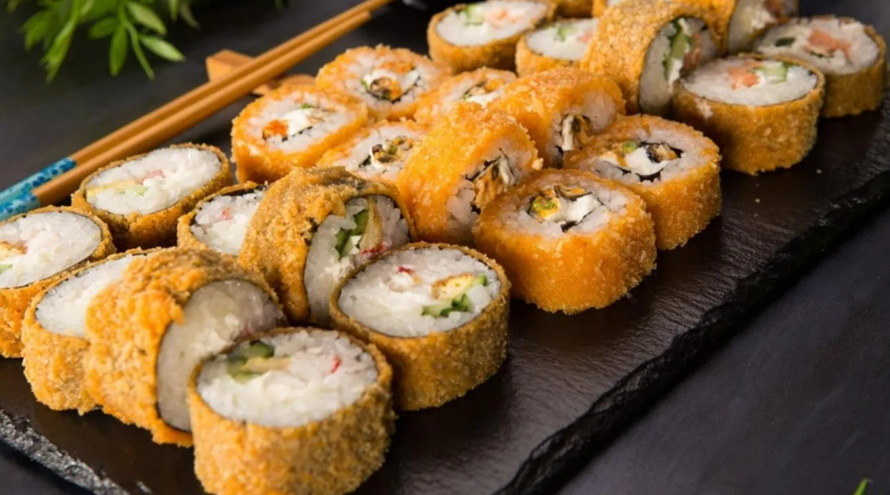

Sushi

Description
Sushi is one of the healthiest foods about, and it's so light too! So sooner or later someone was going to deep fry it and make it the opposite.
Ok, so this sushi isn't going to soak up tonnes of oil and make every bite an explosion of calories, but it is a little bit naughtier than your standard maki roll.
Deep fried maki rolls seem to have been invented in America, and all they really involve is adding a crispy outer shell to your sushi roll, adding to it's luscious appeal!
Ingredients
- 2 Cups of Seasoned Cooked Sushi Rice
- Fresh Salmon (Or Smoked Salmon)
- Cucumber
- Cream Cheese
- 1 Egg
- 50g of Flour
- Salt
- Pepper
- Chili Powder
- 100-150g Panko Breadcrumbs
- 1 Fresh Lime
- Japanese Mayonnaise
- 4 Sheets of Nori
- About 300ml of Vegetable Oil
Steps
- Lay out nori sheets on a bamboo rolling mat, then add sushi rice at about 1cm in thickness, right to the edges of the nori, but leave a 2cm gap at the top for rolling. Pat it down tightly for this recipe to keep things secure when frying.
- Next lay a lengthwise strip of salmon, cucumber and cream cheese along your sushi roll for the filling. You can experiment with other fillings too.
- Roll up your sushi roll as tightly as you can, making sure there is no visible seam of rice.
- Beat the egg in a large bowl, then set aside. Meanwhile, lay out a plate of flour seasoned with a pinch of salt, pepper and chili powder. On another plate, lay out the panko breadcrumbs.
- Begin to heat your vegetable oil in a pan. Make sure you choose a pan large enough for the roll, or cut the roll in half prior to breading.
- Roll each maki roll in flour and ensure it is well coated, then dip into the egg mixture. This is a messy job! Next, roll the egg coated maki in panko breadcrumbs. Pat them down and sprinkle across the maki to ensure it's completely coated.
- When ready, place the maki roll in the hot oil. Fry until the panko is golden.
- Slice when cooked into sushi pieces, and serve with Mayo mixed with lime juice for dipping!